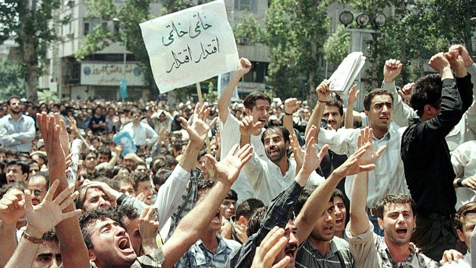
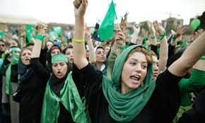
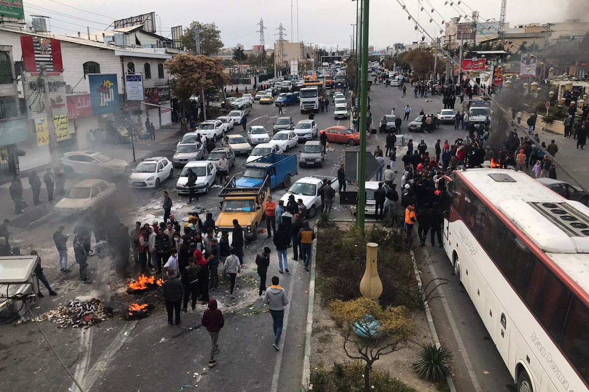
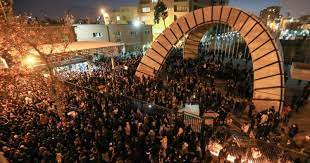

| Contemporary Protests in a Snapshot | |||
|---|---|---|---|
| Protest Name | Deaths | Detained | Participants |
| The 1999 Student Protests | 4 | 14,000 | 10,000 |
| The 2009 Green Movement | 100 | 4,000 | 3,000,000 |
| The 2017-18 Economic Protests | 22 | 3,700 | 42,000 |
| 2019 Price Hike Protests | 304 | 7,000 | 200,000 |
| January 2020 Protests | Unknown | 30 | 4,000 |
| Pictures from the Field | Protest Name | Summary |
|---|---|---|
|  | The 1999 Student Protests | If I could summarize this protest in three words, it would be students, newspaper, and reformism. To protest the closure of a reformist newspaper called "Salaam," many students at Tehran University. The protests started peacefully but quickly turned violent when police set dormitories with students in them on fire. What is important to garner from the tragic events of this protest is understanding a) the location and b) the flashpoint. The epicenter of this protest was Tehran but also spread to other major cities, Tabriz and Isfahan. |
|  | The 2009 Green Movement | The 2009 Green Movement was a mass mobilizer of the Iranian people. The slogan of the protest was, "Where is my vote?" The Presidential Election was between Mir Hossein Mousavi, a reformist, and Mahmoud Ahmadinejad, a conservative. The government alleged that Ahmadinejad had won in a landslide to which millions of Iranian people took to the streets to fight for democracy and liberalization. Looking at the geography of this protest, we can see the mass spread of this protest. People all over the country and in the nation's top 10 major cities. The protest epicenters were located in different parts of the country, not just Tehran. |
 |
The 2017-18 Economic Price Hikes | This protest was rooted in the high cost of living and the price increase of basic commodities. The epicenter of this protest started in Mashhad which happens to be the second largest city in Iran. The protests, however, did end up spreading to other major cities in the region which you can see in the map. Some important slogans from this protest are: "Not Gaza, not Lebanon, my life for Iran,” and "Leave Syria, think about us.” |
|  | The 2019 Price Hike Protests | The 2019 Price Hike Protests were instigated by an almost 300% increase in gas prices and a new oil rationing system. Hundreds of thousands of people took to the streets with the epicenters of the protests also scattered across the major cities in the country. The tone of this the protest was much more anti-governmental with chants like, "Have shame Rouhani, Leave the country alone!" |
|  | The 2020 January Protests | In January 2020, it became known that the Revolutionary Guard mistakenly shot down the Ukraine International Airlines Flight 752. The people on the flight, close 180, died. These protests were more university-based with the main epicenter being in Tehran. Many cried out, "Clerics get lost!" |
What people care about is both topical and geographical. The flashpoints or causes of the protest impacted protest epicenters and their spread. To continue building on this dataset, we can rely on social movement theory to further analyze the impact of population and protest attributes in Iran.
The maps in this project were not as sophisticated as I want them to be because capturing and aggregating the data itself was difficult. I relied on multiple data sets to try to map a more cohesive story of what protests in Iran look like. In the future, I hope to add an additional layer to the population data which captures urban and rural areas. Additionally, the maps and my dataset are in Farsi, posing a accessibility barrier. I have started to translate the province names which is very time-consuming as there are so many provinces.
Fact Sheet: Protests in Iran (1999-2019)
Conflict and Population Displacement in Iran
Iran in Transition: Implications of the Islamic Republic's Changing Demographics